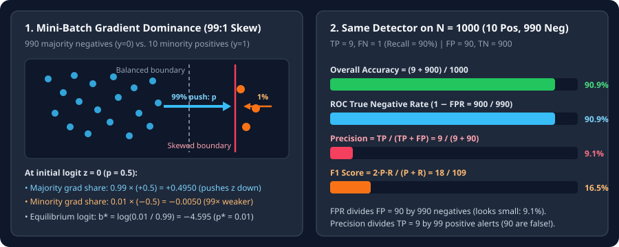

Why Accuracy Lies: Gradient Dominance, PR-AUC vs. ROC-AUC, and Minority Collapse
Derive why majority-class examples overwhelm mini-batch cross-entropy gradients, solve for the skewed constant-logit optimum $b^*=\log(\pi_+/\pi_-)$, and prove on a $1{:}99$ table why ROC-AUC looks deceptively strong while Precision and PR-AUC collapse.
When a binary dataset contains $99\%$ negative examples ($\pi_-=0.99$) and $1\%$ positive examples ($\pi_+=0.01$), a model that predicts “negative” on every input achieves $99\%$ accuracy while catching $0\%$ of the target events. Even worse, standard mini-batch gradient descent actively pushes an uncalibrated neural network toward that trivial solution during early training.
1. Why majority gradients dominate mini-batch cross-entropy
For a binary classifier with logit $z=w^\top f_\theta(x)+b$ and sigmoid probability $p=\sigma(z)=\frac{1}{1+e^{-z}}$, the binary cross-entropy loss on a single example $(x,y)$ with $y\in\{0,1\}$ is
In a dataset with positive fraction $\pi_+=n_+/N$ and negative fraction $\pi_-=n_-/N=1-\pi_+$, the average gradient with respect to the bias $b$ (or logit $z$) decomposes into a minority pull and a majority push:
At initialization ($w=0,b=0$), every example has logit $z=0$ and probability $p=\sigma(0)=0.5$. Compare the two terms when $\pi_+=0.01$ and $\pi_-=0.99$:
The majority negative gradient is $99\times$ stronger than the minority positive gradient! Before the backbone $f_\theta(x)$ has time to learn discriminative features for the rare class, gradient descent drives the bias $b$ sharply negative to satisfy the $99\%$ majority:

2. Why ROC-AUC stays high while Precision and PR-AUC collapse
Suppose we evaluate a classifier on $N=1000$ examples containing $n_+=10$ positives and $n_-=990$ negatives. At our chosen threshold, the model catches $9$ of the $10$ positives ($\text{TP}=9,\text{FN}=1$) and misclassifies $90$ negatives as positive ($\text{FP}=90,\text{TN}=900$). Compare the denominators of the ROC metrics against the Precision–Recall metrics:
- Why ROC looks deceptively good: $\text{FPR}=\frac{\text{FP}}{n_-}$ divides the $90$ false alarms by all $990$ true negatives, producing a tiny $9.1\%$ false-positive rate (and $90.9\%$ overall accuracy).
- Why Precision exposes the problem: $\text{Precision}=\frac{\text{TP}}{\text{TP}+\text{FP}}$ compares the $9$ true detections directly against the $90$ false alarms in the denominator $\text{TP}+\text{FP}=99$. Out of every $11$ positive alerts fired by the model, $10$ are false alarms!
We can write Precision directly in terms of $\text{TPR}$, $\text{FPR}$, and the imbalance ratio $\frac{\pi_-}{\pi_+}=\frac{n_-}{n_+}$ by dividing top and bottom by $n_+$:
When $\pi_-/\pi_+=99$, even a small $\text{FPR}$ gets multiplied by $99$ in the denominator of Precision!
3. Metrics that cannot be gamed by majority prevalence
Depending on whether your deployment cares about alert purity, per-class fairness, or ranking, replace raw accuracy with one of four imbalance-aware metrics:
| Metric | Value on Worked $1{:}99$ Example | Random-Classifier Baseline | When to Use It |
|---|---|---|---|
| Raw Accuracy | $90.9\%$ (predict-all-0 gives $99.0\%$) | $\max(\pi_+,\pi_-)=99.0\%$ | Never use alone on imbalanced data. |
| ROC-AUC | $\approx 0.95$ (looks high) | $0.500$ (invariant to $\pi_+$) | Comparing rank order independent of class prior. |
| PR-AUC (Average Precision) | Sensitive to $\text{FP}=90$ | $\pi_+=0.010$ ($1.0\%$) | Rare positive detection (fraud, lesions, retrieval). |
| Macro $F_1$ / Balanced Acc. | $F_1=16.5\%$, $\text{BalAcc}=90.5\%$ | $1/K$ for Balanced Acc. | Multi-class long-tailed benchmarks where every class matters equally. |
4. Practical fix #0: initialize the final bias to $\log(\pi_+/\pi_-)$
Before changing any loss function or sampler, notice why early training wastes thousands of steps: starting at $b_0=0$ predicts $p=0.50$ when the true rate is $\pi_+=0.01$, generating a massive $+0.495$ majority gradient wave on step $1$. Setting the output bias directly to the log-odds (or log-priors $b_k=\log\pi_k$ for $K$ classes) starts the network at equilibrium on step $0$:
import math
import torch
import torch.nn as nn
# Binary classification with positive prior pi_pos = 0.01:
pi_pos = 0.01
head = nn.Linear(in_features=512, out_features=1)
nn.init.normal_(head.weight, std=0.01)
nn.init.constant_(head.bias, math.log(pi_pos / (1.0 - pi_pos))) # -4.5951
# Multi-class long-tailed classification with class counts n_k:
class_counts = torch.tensor([10000.0, 1000.0, 100.0, 10.0])
priors = class_counts / class_counts.sum()
multiclass_head = nn.Linear(512, len(class_counts))
with torch.no_grad():
multiclass_head.bias.copy_(torch.log(priors))5. Questions worth answering
Because $\text{TPR}=\text{TP}/n_+$ is computed purely within true positives and $\text{FPR}=\text{FP}/n_-$ is computed purely within true negatives; neither ratio mixes $n_+$ and $n_-$. Precision $\text{TP}/(\text{TP}+\text{FP})$ mixes positives and negatives in the same denominator, so scaling $n_-$ by $99\times$ multiplies $\text{FP}$ by $99\times$.
Every negative example has $p_i\approx 0.5$, so $99\%$ of the mini-batch pushes the bias and feature weights downward to drive all predictions toward $0.01$. Initializing $b_0=\log(\pi_+/\pi_-)$ eliminates that initial gradient shock.